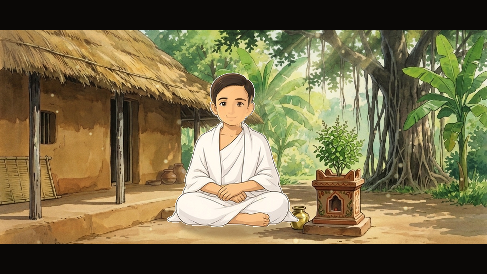
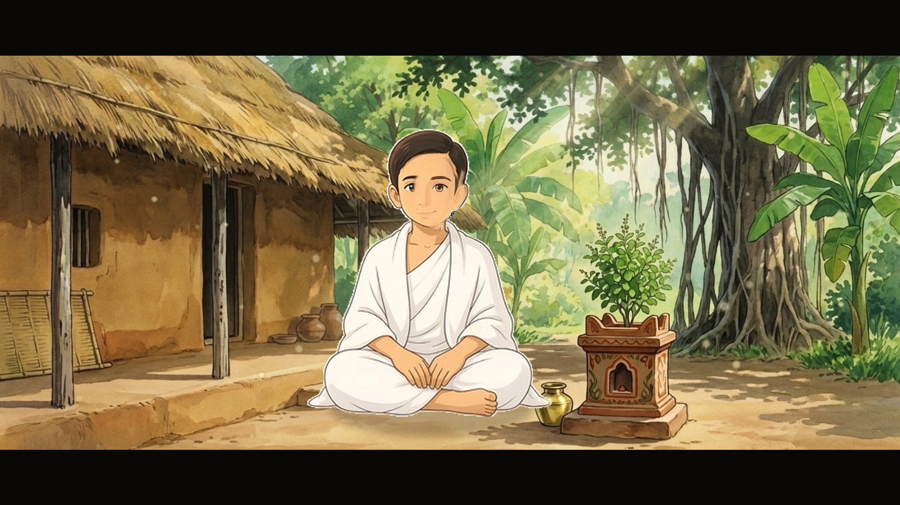
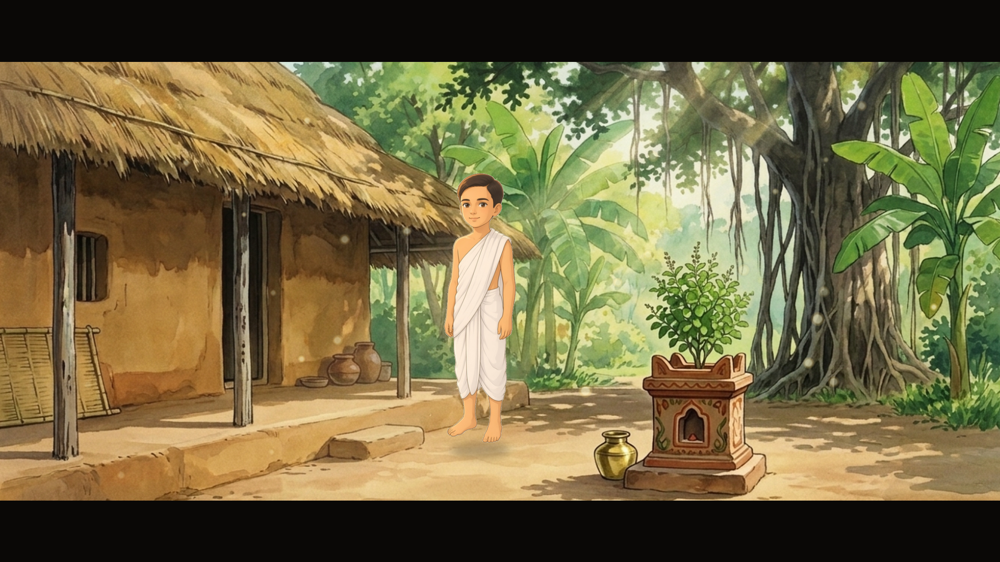
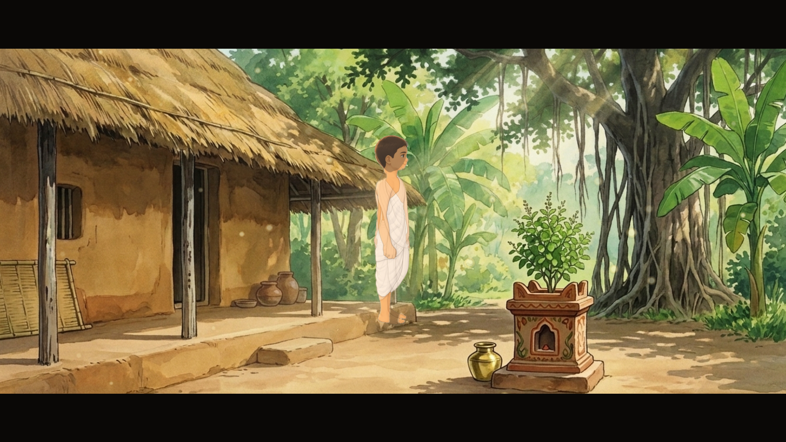

Continuous 12-Second Master Character Acting Sequence in Ujanchar Courtyard (288 Frames @ 24 FPS, Studio Ghibli Aesthetic)


y=860.


y=860 with dynamic Gaussian contact shadow tracking character footprint.